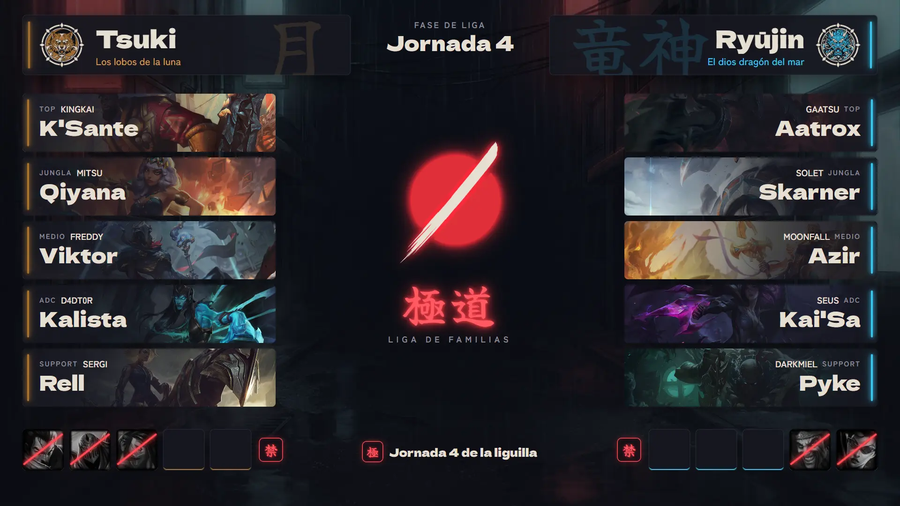
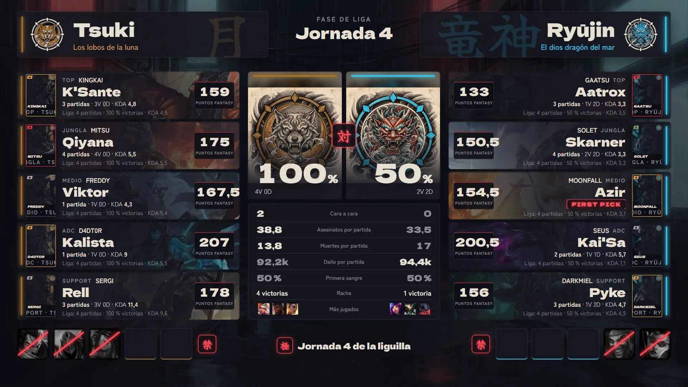
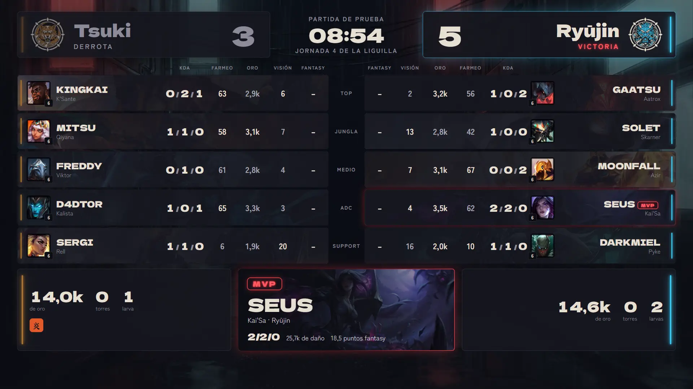
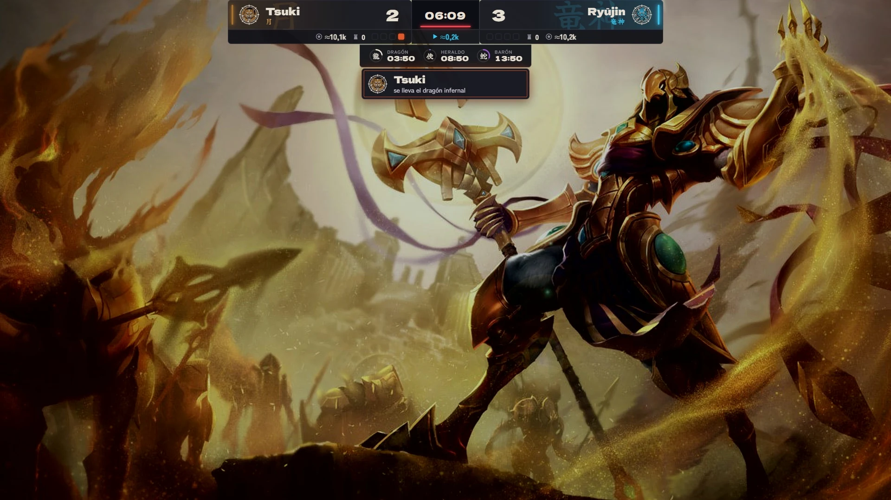
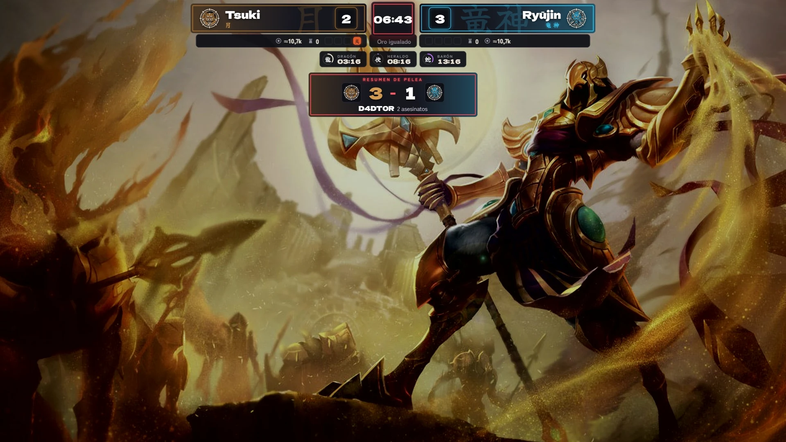
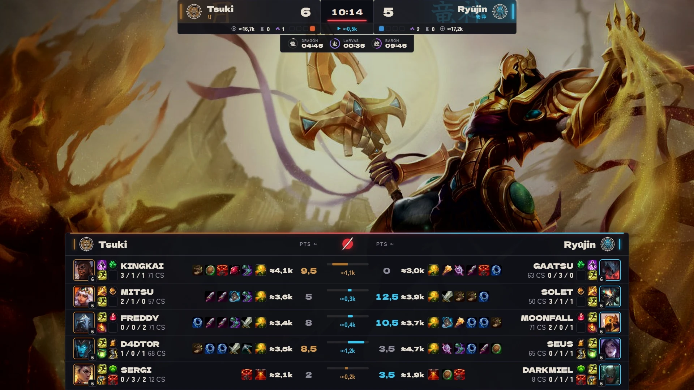
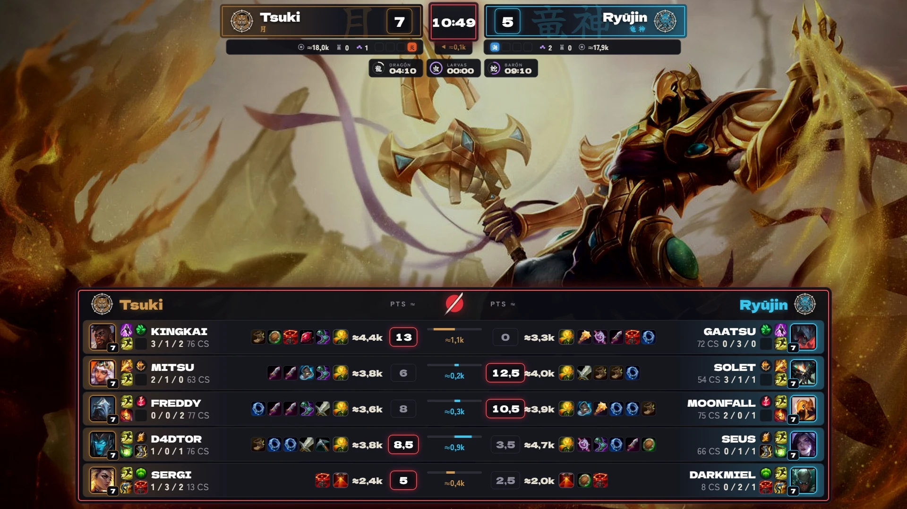
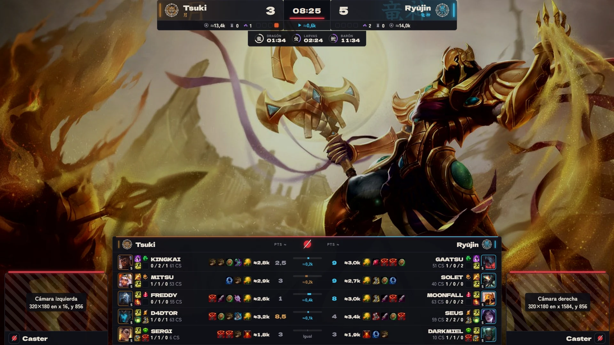
?guia=1).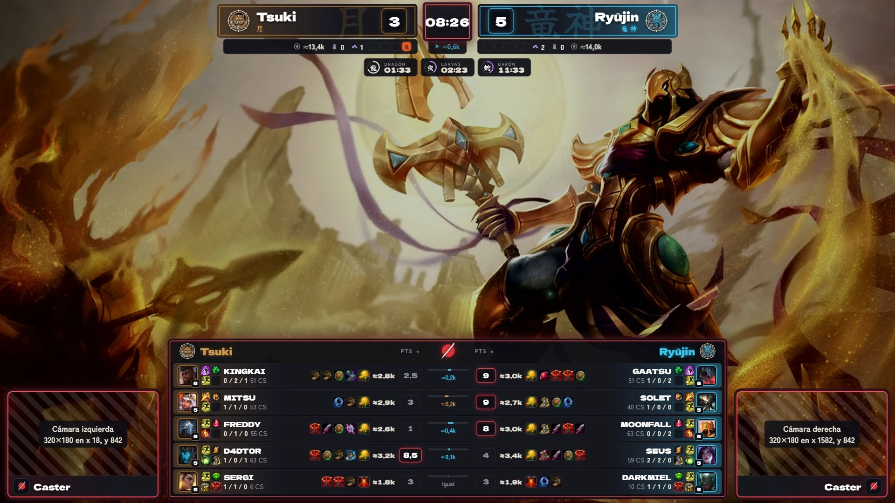
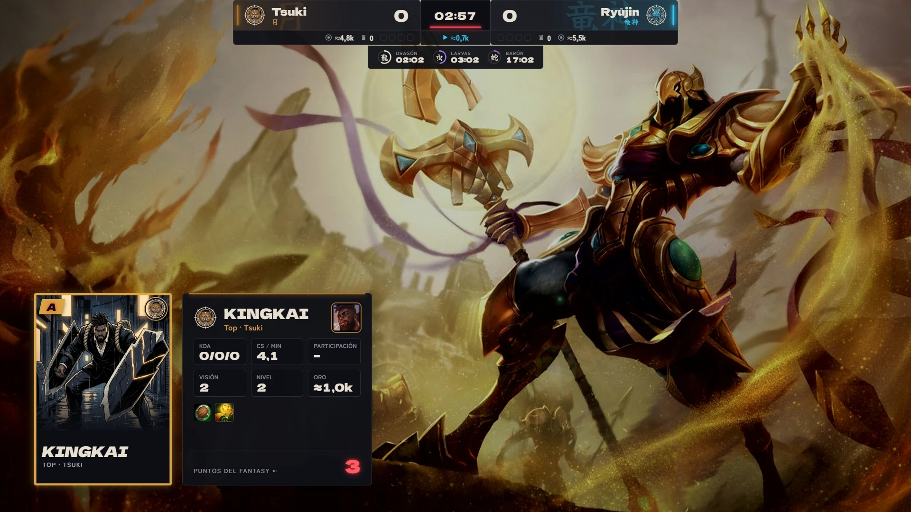
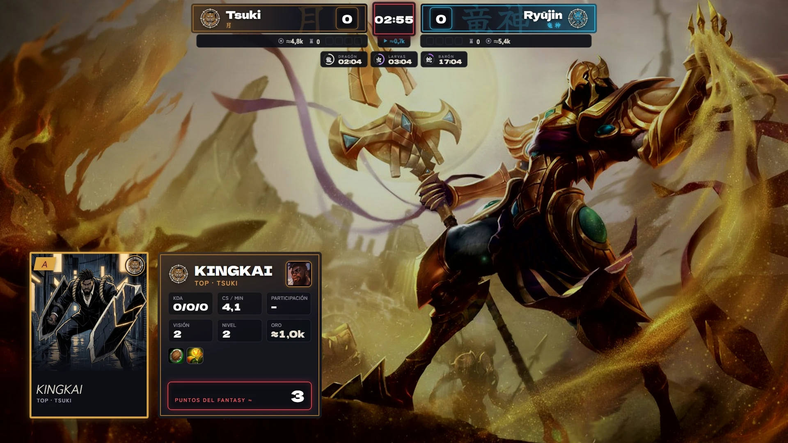
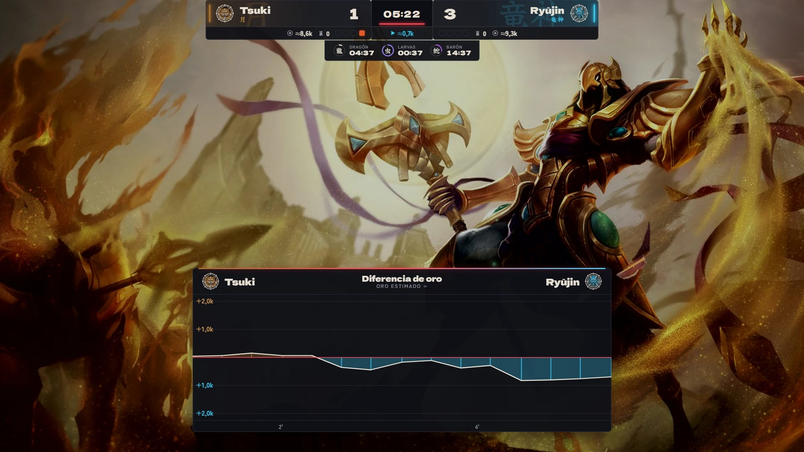
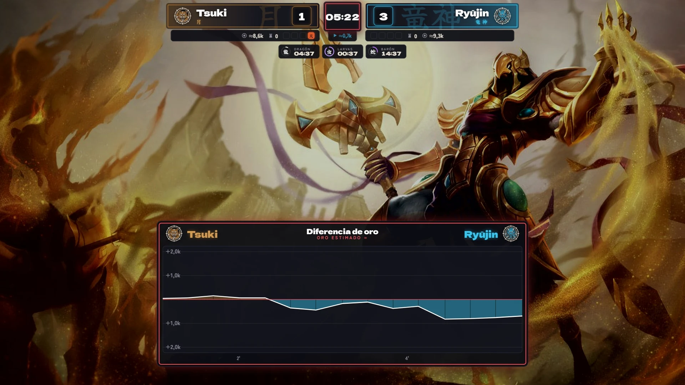
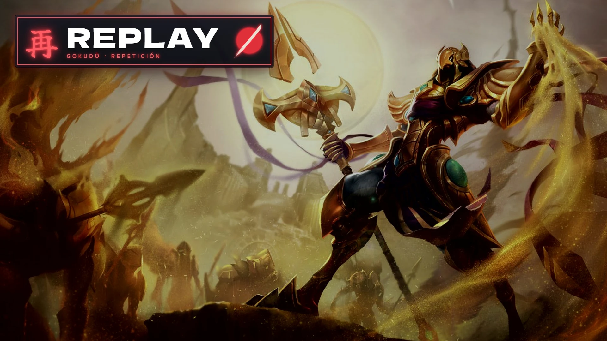
/overlay/?vista=replay.Capturas a 1920×1080 de cada vista, con la liga de prueba (npm run prueba-directo). El draft, el postdraft y la pantalla final llevan su propio fondo: el callejón con lluvia hecho en Flow. El marcador va transparente encima del juego, así que aquí se ve sobre un splash oscurecido que hace de juego. En la pantalla final, el ganador y el MVP se han puesto a mano en la página, porque la partida de prueba no se puede dar por ganada.








?guia=1).





/overlay/?vista=replay.